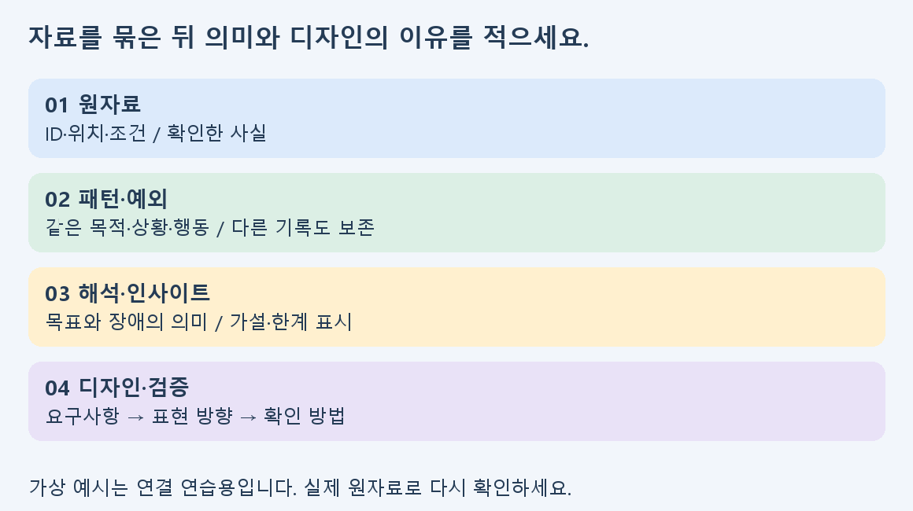
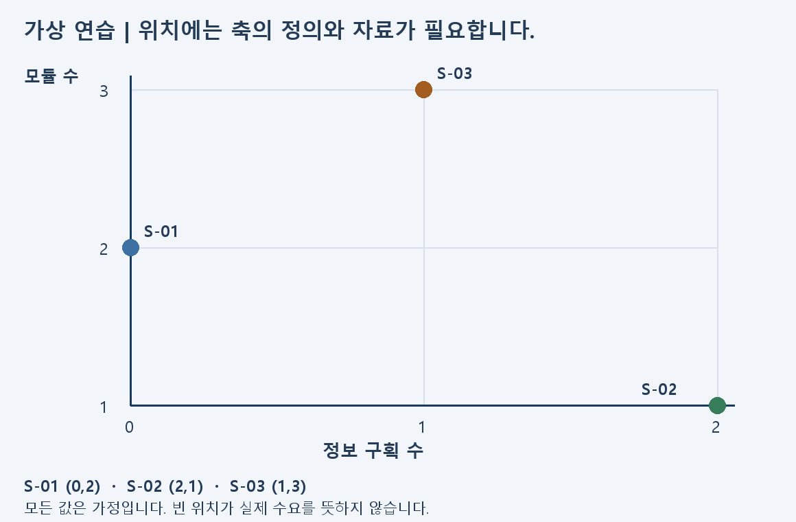

시각디자인 리서치 분석 | B그룹
1. 자료 나열을 비교와 해석으로 바꾸기
자료와 브랜드 방향이 있다면, 이번에는 같은 기준으로 비교하고 발견한 차이를 디자인 판단으로 연결하세요. 부족한 항목부터 보완하고 현재 결과물을 전부 새로 만들 필요는 없습니다.
| 증상 | 먼저 할 일 | 이동 |
|---|
| 자료의 시장 범위가 섞임 | 핵심·인접 시장과 단위 구분 | 2절 |
| 경쟁사 이름·사진만 있음 | 동일 접점의 비교표 작성 | 3절 |
| 키워드가 있지만 근거가 약함 | 기록을 묶고 인사이트 작성 | 4~5절 |
| 타깃·개발 순서가 넓음 | 역할과 단계의 이유 작성 | 6~8절 |
권장 160분: 범위·비교 40분 → 분류·인사이트 45분 → 사용자·포지셔닝 40분 → 방향·발표 35분. 선택 영상은 약 17분을 추가합니다.
첨부의 메모·브랜드·가격·사용 상황은 모두 설명용 가상 데이터입니다. 실제 시장조사나 학생 조사 결과가 아닙니다. 자신의 평가 결과물에는 실제 원자료를 사용하고, 제공·모의 자료를 쓰면 유형을 표시하세요. 이 자료는 기존 평가의 배점·제출 조건을 바꾸지 않습니다.
시각디자인 리서치 분석 | B그룹
2. 시장·자료 범위를 먼저 맞추기
시장 현황, 향후 전망, 내 제품의 예상 수요는 서로 다른 주장입니다. 범위가 다른 시장 수치를 한 표에 넣었다면 분류부터 다시 하세요.
| 기록할 칸 | 확인 질문 |
|---|
| 출처·시점 | 누가 언제 발행했으며 어느 기간을 다루는가? |
| 범위·단위 | 어느 제품·지역·대상이며 금액·비율·건수 중 무엇인가? |
| 분류 | 내 핵심 시장인가, 대체·인접 시장인가? |
| 해석·한계 | 내 프로젝트에 어디까지 관련되며 무엇은 알 수 없는가? |
R-01처럼 자료번호와 원문 위치를 붙입니다. 동일 조건의 자료를 찾지 못하면 억지로 숫자를 맞추지 말고 비교할 수 없는 이유와 다음 확인 대상을 적습니다.
실습: 기존 시장 주장 두 개를 “확인한 현황 / 내 해석 / 추가로 확인할 전망”으로 나누세요. 인접 시장의 성장으로 내 제품의 구매를 확정하지 않습니다.
시각디자인 리서치 분석 | B그룹
3. 경쟁 디자인을 같은 항목으로 비교하기
같은 사용 목적의 두 대안을 고르고 같은 화면·면·사용 단계에서 비교하세요. “고급스럽다” 대신 어떤 색·타입·구조·표현이 보이는지 적습니다.
| 항목 | 사례 A·B에 똑같이 적용 |
|---|
| 선정·출처 | 왜 대안인지, 공식 원문·캡처·확인 시점 |
| 콘텐츠·위계 | 용도·규격·가격·구성 중 무엇이 먼저 읽히는지 |
| 형태·색·타입 | 휴대·개폐·배치, 색의 역할과 글자 대비 |
| 재질·채널 | 공식 표기와 판매·이용 접점, 모르는 사항 |
| 장점·제약 | 어느 상황에 어떤 도움이 되거나 제한이 있는지 |
실제 사용자 반응을 보지 않았다면 “찾기 쉽다”는 결론 대신 “정보가 한 구역에 모여 있어 탐색을 줄일 가능성이 있다”는 가설로 적습니다.
실습: 첨부 비교표에 대안 두 개를 기록하고 확인한 차이 한 개, 내 프로젝트에서 참고할 원리 한 개, 추가 질문 한 개를 쓰세요. 가상 비교 예시는 작성 방법만 참고합니다.
시각디자인 리서치 분석 | B그룹
4. 흩어진 기록을 의미 있는 묶음으로 정리하기

메모 한 개에는 한 가지 의미를 적고 원문 위치와 기록 유형을 남깁니다. 처음부터 정해 둔 결론에 맞춰 넣지 말고 목적·상황·행동이 비슷한 기록끼리 가까이 놓으세요.
- 기록을 읽고 행동·상황을 짧게 표시합니다.
- 비슷한 의미끼리 묶고 같은 단어라도 맥락이 다르면 나눕니다.
- 묶음에 “휴대” 같은 단어만 쓰지 말고 어떤 행동이 반복되는지 문장으로 적습니다.
- 어느 묶음에도 맞지 않는 기록과 반대 사례를 별도로 남깁니다.
가상 D-01·02는 준비와 휴대, D-03·04는 선택 정보처럼 묶을 수 있습니다. 이는 유일한 정답이 아니며, 실제 데이터에서는 원문과 질문에 맞는 기준을 설명해야 합니다.
실습: 실제 기록 다섯 개 정도를 권장합니다. 묶음을 바꾼 이유와 예외 한 개를 적으세요. 메모 수가 가장 많은 묶음이 무조건 가장 중요한 문제인 것은 아닙니다.
시각디자인 리서치 분석 | B그룹
5. 사실·해석·인사이트를 다른 칸에 쓰기
사실은 확인한 내용, 해석은 그 의미에 대한 판단, 인사이트는 특정 상황에서 목표와 장애가 어떻게 연결되는지를 설명한 발견입니다. 근거가 약한 원인은 가설로 표시하세요.
| 구분 | 가상 연습 예시 |
|---|
| 사실 | D-01에는 기록할 도구를 찾는 상황이 기록되어 있음 |
| 패턴 | D-01·02에서 기록을 시작하기 전 준비 문제가 나타남 |
| 인사이트 가설 | 이동 전 준비 부담이 짧은 기록의 시작을 방해할 수 있음 |
| 한계·다음 확인 | 가상 기록의 연결 연습이며 실제 빈도·원인은 확인하지 않음 |
문장 틀: “[상황]의 [사용자]는 [목표]를 이루려 하지만 [근거에서 확인한 장애]를 겪습니다. [이유에 관한 해석]은 가설이며 [추가 확인]이 필요합니다.”
실습: 기존 키워드 두 개를 위 문장으로 바꾸세요. 근거 없는 원인·시장 규모·선호 비율은 채워 넣지 않습니다.
시각디자인 리서치 분석 | B그룹
6. 연령보다 역할·상황·행동으로 타깃 구분하기
“2030”은 인구학적 범위일 뿐 사용 목적을 모두 설명하지 않습니다. 누가 구매하고, 누가 실제 사용하고, 어떤 상황에서 선택하는지를 나누세요.
| 사용자 구분 | 분석할 것 |
|---|
| 핵심 사용자 | 어떤 목표를 언제 어디서 달성하려는가? |
| 다른 역할 | 구매·선물·관리 등 다른 결정을 하는 사람이 있는가? |
| 행동·제약 | 선택할 정보·기기·시간·휴대 조건은 무엇인가? |
| 근거·예외 | 어떤 기록이 지지하며 다른 기록은 무엇인가? |
라이프스타일·소비심리는 실제 기록으로 연결할 때만 사용합니다. 리뷰 한두 개의 경향을 전체 사용자 비율로 표현하지 마세요.
실습: 사용자 두 유형을 비교하고 각 유형의 필요 정보와 근거ID를 적으세요. 자료가 없는 칸은 “가설”로 표시하고 최근 경험을 확인할 질문을 남깁니다.
시각디자인 리서치 분석 | B그룹
7. 포지셔닝과 조형 트렌드 분석하기

축마다 무엇을 세거나 판단했는지 먼저 정합니다. 첨부 가상 예시는 구성 정보의 구획 수와 모듈 구성 수를 사용합니다. 실제 프로젝트에서는 사용자 선택에 중요한 기준인지도 확인하세요.
| 분석 | 보완할 기록 |
|---|
| 경쟁 위치 | 동일 기준의 사례별 근거와 좌표 |
| 목표 위치 | 내가 다루려는 사용자·상황과 이유 |
| 조형 트렌드 | 색·타입·레이아웃의 반복 원리와 차이 |
| 디자인 적용 | 그대로 복제하지 않고 바꿀 표현 규칙·사용 조건 |
비어 있는 위치를 발견해도 수요는 별도 가설입니다. “미니멀”을 적용하려면 어떤 정보를 줄이고 무엇을 남길지 요구사항과 함께 적으세요.
실습: 맵의 축 정의와 사례의 위치 이유를 한 줄씩 쓰고, 참고 트렌드 한 가지를 내 정보 위계·색·타입 규칙으로 바꾸세요.
시각디자인 리서치 분석 | B그룹
8. 디자인 방향과 개발 단계 연결하기
분석표의 마지막 칸은 “예쁘게 만든다”가 아니라 사용 목적에 필요한 구체적인 요구사항이어야 합니다. 요구사항 옆에 근거와 확인 방법을 붙이세요.
| 연결 | 적을 것 |
|---|
| 근거 → 요구 | 원자료ID와 어떤 필요를 충족할지 |
| 요구 → 표현 | 정보 순서·색의 역할·글자 위계·형태·구성 |
| 표현 → 확인 | 무엇을 보거나 질문하면 판단할 수 있는지 |
| 확인 → 개발수준 | 1차·확장·보류와 넘어갈 조건 |
제품에 앱·구독·라인업을 추가하고 싶다면 새로운 사용자 필요와 제작·운영 조건을 각각 적습니다. 이 지원학습은 분석과 예측을 다루며 실제 구현·출시까지 요구하지 않습니다.
실습: 요구사항 두 개와 1차 범위 한 개, 확장 후보 한 개를 정리하세요. 각 선택의 근거ID와 미확인점을 발표할 수 있도록 준비합니다.
시각디자인 리서치 분석 | B그룹
9. 국내 전문가 글과 무료 영상으로 복습하기
국내 실무자의 한국어 무료 공개 글과 영상입니다. 처음 네 자료는 읽기, 마지막 영상은 선택 활동입니다. 링크를 열고 아래 질문에 답하세요.
pxd 전성진
멘탈모델(2)-행동중심의 디자인접근법 · 공개일 2010-07-06
읽거나 보고 할 일: 행동 추출·패턴 찾기 부분을 읽고 메모 묶음의 이름을 문장으로 바꾸세요.
pxd 박재현
정성, 정량 조사를 병행하여 퍼소나에 설득력 부여하기 · 공개일 2018-12-05
읽거나 보고 할 일: 사용자군 분류 부분에서 역할과 행동 기준을 찾으세요.
삼성SDS 최영현
디자인 씽킹③ - 디자인 씽킹으로 올바른 질문에 올바른 답을 찾는다 · 공개일 2018-08-03
읽거나 보고 할 일: 문제 정의를 읽고 누구의 어떤 상황인지 한 문장으로 적으세요.
토스 김서연
토스 UX 리서처는 어떤 방법론을 사용할까? · 공개일 2024-03-13
읽거나 보고 할 일: 실제 사용과 예상 사용의 차이를 읽고 내 결론의 한계를 적으세요.
공돌이 디자이너
현직 UXUI 디자이너 포트폴리오 공개합니다 · 공개일 2020-04-09
읽거나 보고 할 일: 16분 23초의 사례 영상입니다. 자료에서 결론으로 넘어가는 장면을 찾아 멈추고 내 분석표와 비교하세요.
방법을 배우는 참고자료입니다. 과거 글의 시장 현황을 현재 사실로 사용하지 말고, 자신의 프로젝트 시점에 맞는 원문을 확인하세요. 외부 글·이미지는 복제하지 않았으며, 본문의 도식과 가상 연습자료는 별도로 작성했습니다.
시각디자인 리서치 분석 | B그룹
10. 발표 전 자기점검과 다음 학습
| 점검 | 확인할 내용 |
|---|
| 근거 | 본문 주장에 원자료ID·위치·조건이 연결되는가? |
| 비교 | 범위·단위·접점·기준이 서로 같은가? |
| 해석 | 관찰·패턴·해석·가설·한계를 구분했는가? |
| 사용자 | 연령만이 아니라 목적·상황·행동으로 구분했는가? |
| 디자인 결정 | 색·타입·정보 배치·구조의 선택 이유가 분석에 연결되는가? |
| 개발수준 | 1차·확장·보류와 다음 검증 조건을 설명할 수 있는가? |
권장 발표 연습: “무엇을 알아보았는가 → 같은 기준으로 무엇을 비교했는가 → 어떤 차이와 한계를 발견했는가 → 그래서 무엇을 먼저 디자인할 것인가”를 순서대로 말해 보세요.
- □ 표와 맵의 위치를 원자료에서 다시 찾을 수 있습니다.
- □ 인사이트가 단순 키워드와 어떻게 다른지 설명할 수 있습니다.
- □ 사용자 구분과 디자인 방향의 연결을 말할 수 있습니다.
- □ 실제로 확인하지 않은 내용은 가설·미확인으로 표시했습니다.
- □ 수정 전후 한 가지와 다음 질문 한 가지를 적었습니다.
다음 학습: 연결이 끊기는 단계는 C그룹의 짧은 예제로 되짚고, 비교 기준과 반대 근거를 더 검토하려면 A그룹 자료로 이어가세요. 질문할 때는 표·맵·원자료ID를 함께 보여 주세요.